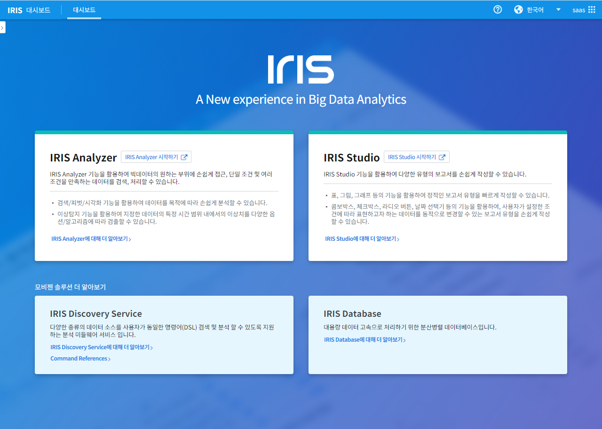
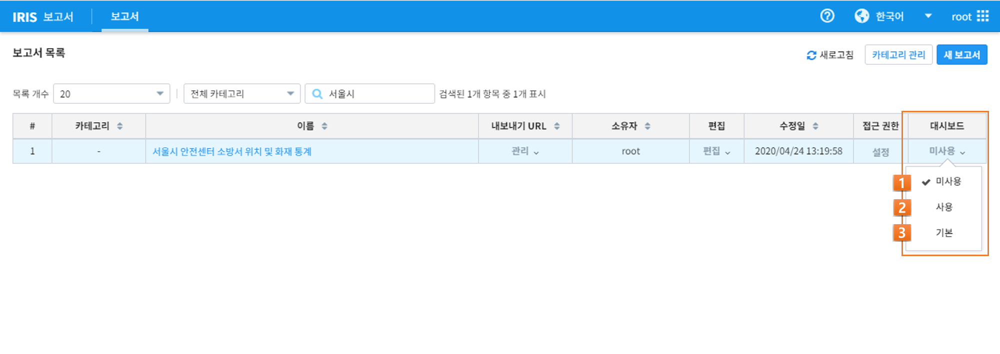
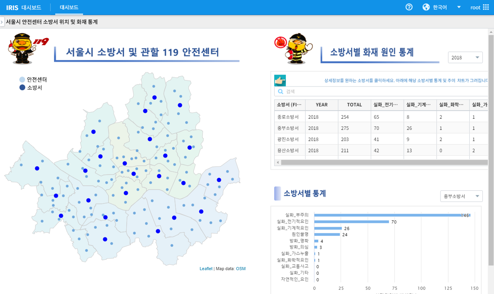

대시보드¶
대시보드는 IRIS Studio에서 작성된 다양한 형태의 보고서를 등록하여 관리할 수 있는 기능을 제공합니다. 최초 IRIS 접속 시 다음과 같은 화면을 확인할 수 있습니다.
보고서를 대시보드로 등록하기¶
IRIS 사용자는 생성한 보고서를 대시보드로 등록할 수 있습니다.
다음 링크에서 보고서 생성하기 튜토리얼을 확인할 수 있습니다.
생성된 보고서는 ‘메뉴’ - ‘보고서’에서 다음과 같이 목록을 확인 가능하며, ‘대시보드’ 메뉴를 통해 대시보드와 연계할 수 있습니다.
번호 |
구분 |
설명 |
1 |
미사용 |
작성된 보고서는 대시보드에서 활용되지 않음 |
2 |
사용 |
선택 시 대시보드 화면에서 리스트 형태로 선택 가능 |
3 |
기본 |
선택 시 사용자가 로그인 후 대시보드 화면으로 등록 |
보고서를 ‘사용’으로 선택하기¶
생성된 보고서는 ‘사용’으로 선택하여 대시보드 화면의 리스트에서 확인할 수 있습니다.
대시보드 화면의 좌상단 옵션 버튼을 클릭하면 ‘사용’으로 등록된 모든 보고서의 리스트가 출력되며, 해당 보고서를 선택하여 바로 확인이 가능합니다.
보고서를 ‘기본’으로 선택하기¶
생성된 보고서는 ‘기본’으로 선택하여 IRIS 접속 시 대시보드 화면의 첫 번째 화면으로 확인할 수 있습니다.
